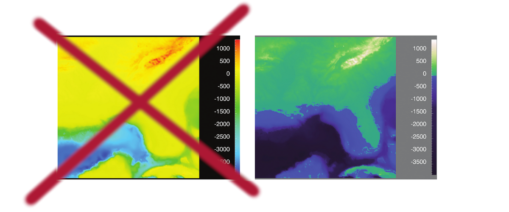
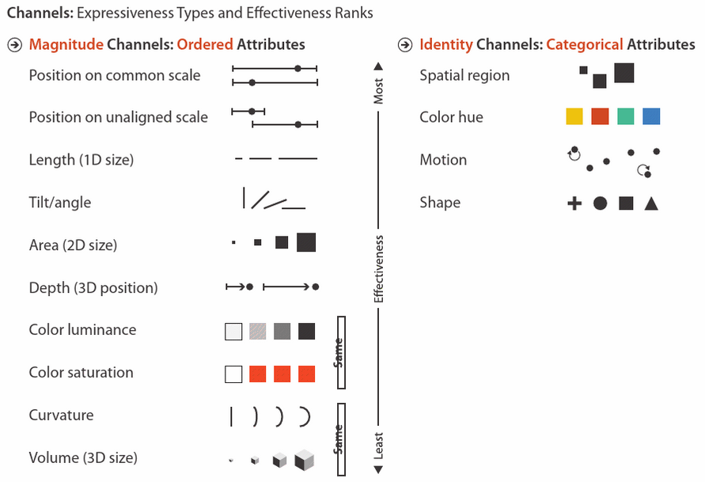
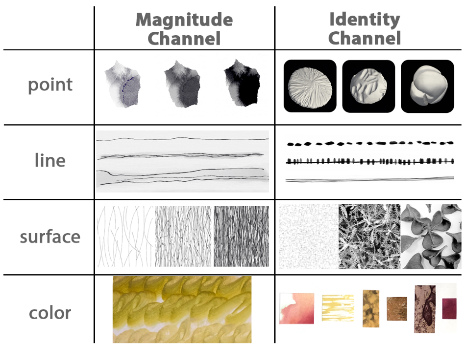
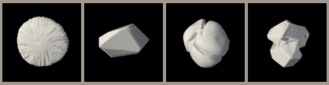
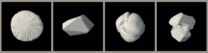

Hands-On: Encodings
Announcements
- A2: Encodings is released – more on this later
- Join the class Discord
Please make sure your "server name" contains your internet ID and preferred name
We will be using this occasionally in class (today)!
By the end of class today,
you should be able to:
- Contrast ordered and categorical data, map to visual channels
- Describe sequential and divergent gradients
- Explain the difference between binned and continuous gradients
- Encode data in a variety of ways
- Fathom what is expected for A2
Ordered vs. Categorical Data
Ordered (quantitative):
- Temperature
- Parking cost at the Union St. Ramp
- Year *
Categorical:
- Type of fruit
- Year*
*Sometimes useful to bend the rules
Gradients
Gradients – Sequential vs. Divergent
Color gradients (colormaps):
Sequential (linear)
Divergent
Gradients – Sequential vs. Divergent
Gradients – Sequential vs. Divergent
Binned Gradients
When there's not a well-defined transition between gradient steps

Test your knowledge:
 


- Data type: ordered vs. categorical
- Sequential vs. Divergent
- Binned